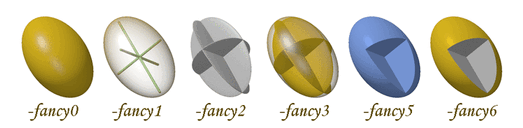

RASTEP
Raster3D Thermal Ellipsoid Program
SYNOPSIS
rastep < infile.pdb > ellipsoids.r3d
rastep -tabulate [tabfile] [-by_atomtype] [-com [comtabfile]] \
< infile.pdb > statistics.text
rastep reads a PDB coordinate file. This file must contain
ANISOU records
describing atoms refined with Anisotropic Displacement Parameters Uij.
rastep can either create an input file for the Raster3d
render program or perform a statistical
analysis of the atomic anisotropy for various classes of input atoms.
By default the program creates an ellipsoid+stick scene description in which
each atom is represented by an ellipsoid enclosing an isosurface of the
probability density function. These are commonly known as thermal ellipsoids.
The program can be run in an alternate mode, controlled by the -tabulate option,
in which the primary output to stdout is a list of the Eigenvalues of the Uij
matrix, followed by the corresponding atomic anisotropy and isotropic Ueq,
for each atom in the input file with both an ATOM record and a matching ANISOU record.
EXAMPLES
Describe thermal ellipsoids at the 50% probability level, with default
CPK colors, and send it for immediate rendering into a TIFF image file.
The angle of view is automatically adjusted to spread atoms out as much as
possible in the XY plane of the image:
rastep -auto < infile.pdb | render -tiff picture.tiff
Describe the same ellipsoids colored by Biso, and create an input
module with no header records for inclusion in a composite image:
rastep -h -Bcolor 10. 30. < infile.pdb > ellipsoids.r3d
cat header.r3d ellipsoids.r3d otherstuff.r3d | render -tiff picture.tiff
List anisotropy of individual atoms to stdout and summarize the distribution
of anisotropy to a separate file:
rastep -tab summary.out < infile.pdb > anisotropy.out
OPTIONS
- -auto
- Auto-selection of viewing angle, chosen to minimize the spread of the atoms
along the view direction.
- -Bcolor Bmin Bmax
-
 Assign colors based on B values rather than matching ATOM records against
input or default COLOUR records. Atoms with B <= Bmin will be colored
dark blue; atoms with B >= Bmax will be colored light red; atoms with
Bmin < B < Bmax will be assigned colors shading smoothly through
the spectrum from blue to red.
Assign colors based on B values rather than matching ATOM records against
input or default COLOUR records. Atoms with B <= Bmin will be colored
dark blue; atoms with B >= Bmax will be colored light red; atoms with
Bmin < B < Bmax will be assigned colors shading smoothly through
the spectrum from blue to red.
- -fancy[0-6]
- The -fancy option selects increasingly complex representations of the
rendered ellipsoids (see figure)
- -fancy0 [default] solid surface
- -fancy1 draw principal axes of ellipsoid with a transparent bounding surface
- -fancy2 draw colored equatorial planes of the ellipsoid
- -fancy3 draw colored equatorial planes with a transparent bounding surface
- -fancy4 draw longest principle axis of ellipsoid
- -fancy5 for ORTEP lovers, draw ellipsoid with octant missing
- -fancy6 for ORTEP lovers who want the missing octant to be a different color

- -h
- Suppress header records in output. By default rastep will produce
an output file which starts with header records containing a default set
of scaling and processing options. The -h flag will suppress these header
records. This option is useful for producing files which describe only
part of a scene, and which are to be later combined with descriptor files
produced by other programs.
- -iso
- Force isotropic probability surfaces (spheres). By default rastep
will look for
ANISOU records
in the PDB file and use these to generate
ellipsoids. If no ANISOU record is present for a given atom, the B value
given in the ATOM record will be used to generate a sphere instead. Selecting
the -iso option will force the program to use the B value in the ATOM record
even if an ANISOU record is also present.
- -mini
- Auto-orientation (as in -auto) and small size plot (176x208).
- -nohydrogens
- Do not plot hydrogens, even if present in PDB file.
- -prob Plevel
- By default, isosurfaces are drawn to enclose the 50% probability level
in the probability density function described by the Uij values in the
ANISOU record. The -prob option allows you to select a different probability
level instead. If 0<Plevel<1 this value is interpreted as a fraction;
if Plevel > 1 this value is interpreted as a percent.
- -radius R
- By default, rastep draws bonds with radius 0.10Å between
neighboring atoms using the same algorithm as rods. This option
allows you to change the radius of the bonds.
If the radius is set to 0 no bonds are drawn.
OPTIONS USED FOR STATISTICAL ANALYSIS
- -tabulate [tabfile]
- The -tabulate option requests that the program accumulate and print
statistics on the distribution of anisotropy among atoms in the input
file rather than producing an input file for render. The principle axes
and anisotropy of each atom are written to stdout. An overall
statistical summary is written to tabfile if specified, otherwise to
stdout.
- -by_atomtype
- The -by_atomtype option is a modifier to -tabulate. It causes a
further subdivision of atoms by atom type (columns 77:78 in the PDB
ATOM record) in the preparation of statistical summaries.
- -com [comtabfile]
- Tabulate distribution of anisotropy in shells by distance from
center-of-mass. Output to comtabfile if specified, otherwise to
stdout
NOTES
There is little, if any, consistency in format among the various programs
which write out anisotropic displacement parameters. This program interprets
the Uij values in the order specified for
ANISOU records in PDB format.
That is, columns 29-70 of the PDB record are interpreted as integers representing
104 Å2 x Uij , in the order U11, U22, U33,
U12, U13, U23. Note in particular that the order of cross-terms is not
the same as that used by ORTEP or SHELX, which do not use PDB format. However,
the program shelxpro will produce correctly formatted PDB records from
a SHELX coordinate file.
AUTHOR
Ethan A Merritt
REFERENCES
M.N. Burnett & C.K. Johnson (1996). "ORTEP-III: Oak Ridge thermal
ellipsoid plot program for crystal structure illustrations". ORNL-6895,
Oak Ridge National Laboratory. Table 6.1
K.N. Trueblood et al (1996). "Atomic Displacement Parameter Nomenclature,
report of a subcommittee on atomic displacement parameter nomenclature".
Acta Cryst. A52, 770-781.
E.A. Merritt (1999). "Expanding the Model:
Anisotropic Displacement Parameters in Protein Structure Refinement".
Acta Cryst. D55, 1109-1117. (Copyright © International Union of Crystallography).
 Back to top
Back to top
 Raster3D homepage
Raster3D homepage